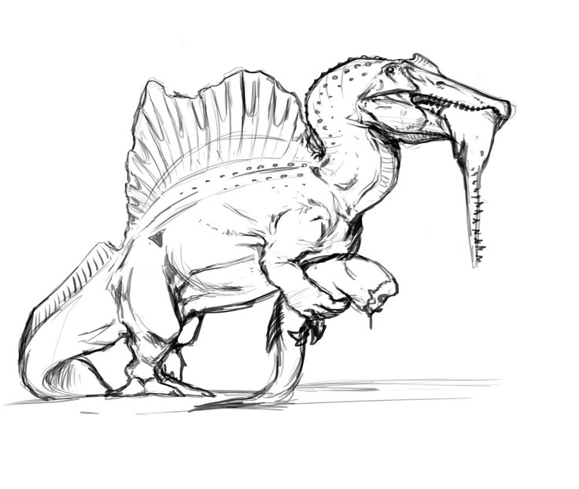

When I'm not coding on my computer, I'll be spending time doing other sorts of things.
Drawing
I have always enjoyed drawing ever siunce I first made a simple stickman. I found the idea of putting your thoughts from your head onto a physcial piece of paper awesome and I have been doing so for a while.
Working Out

Being fit and healthy was always something I believed I should always be. Being strong, athletic, and look good is amazing to see and feel. However, the only problem is that there is always another plateau to break.
Music
Although I just started, playing musical instruments was so cool too me and I always wanted to do it. I hope to master the piano at some point and play all my favorite songs and maybe show others someday.